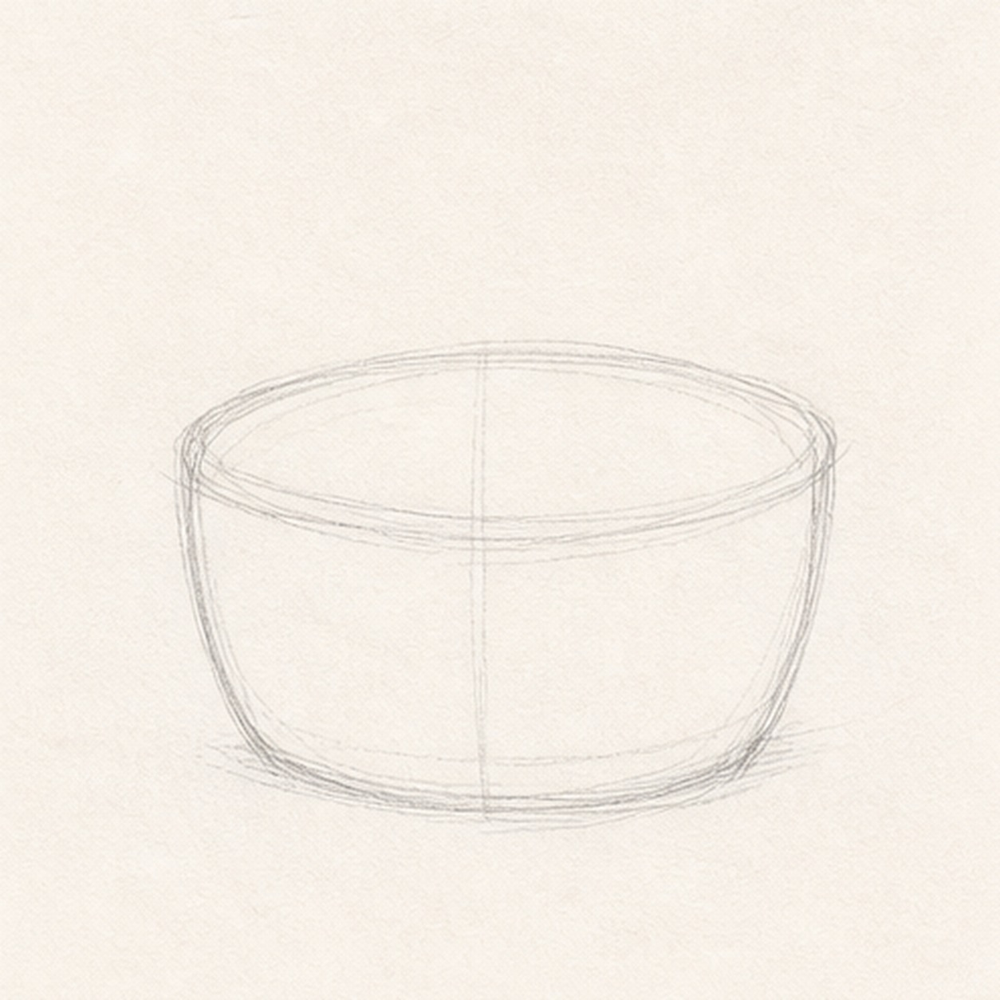
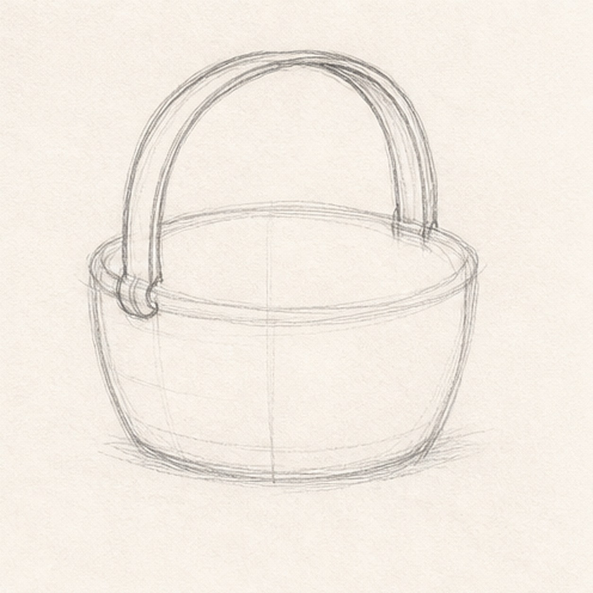
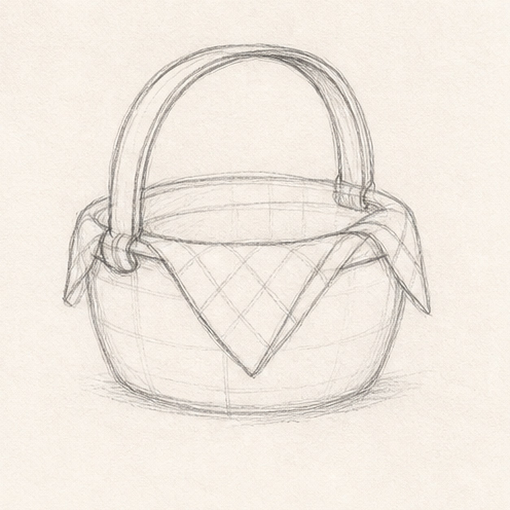
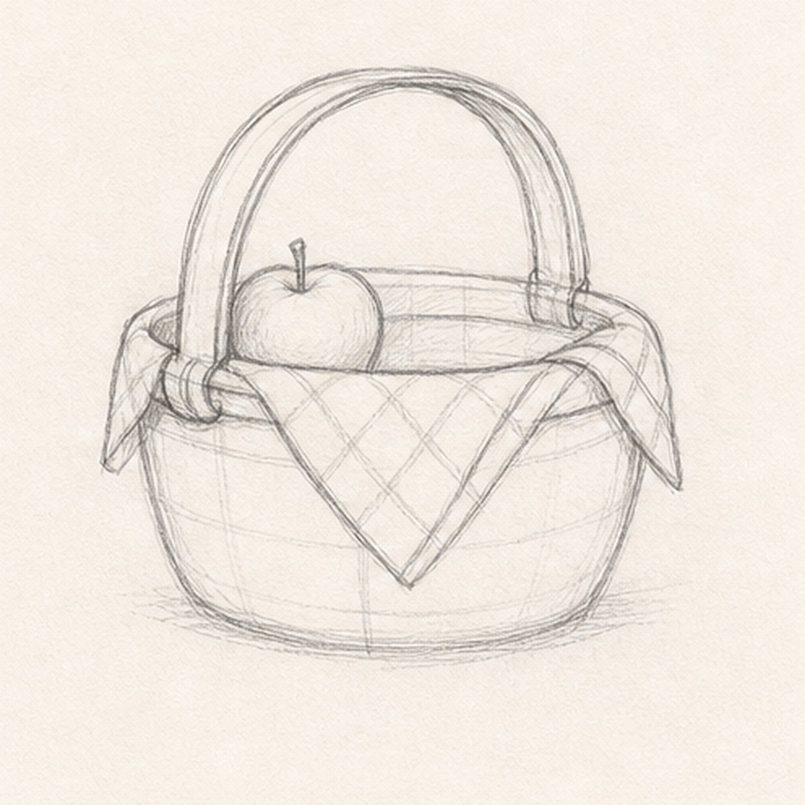
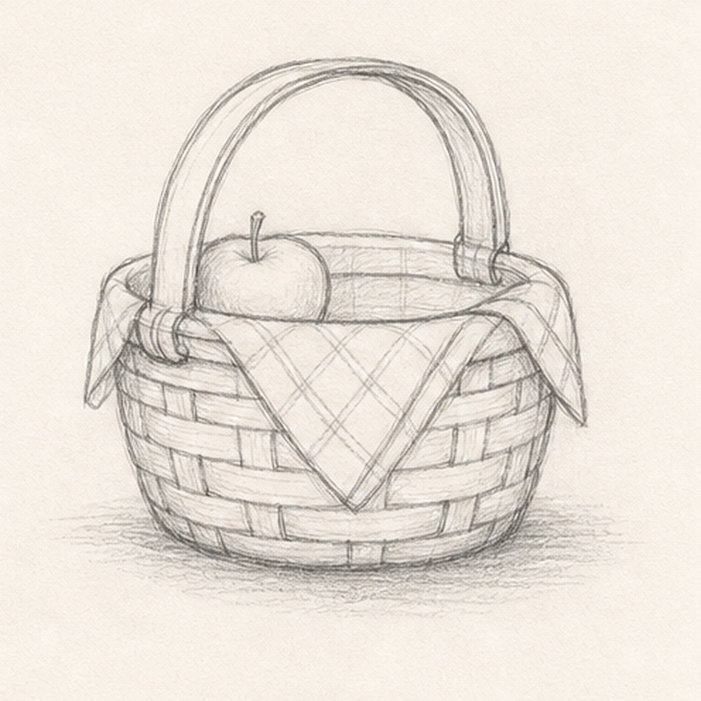

From the archive
Let's draw a picnic basket
Treat this as one small practice round: build the subject lightly, notice the shapes, then darken only the lines that help the finished sketch.
-
01

Block in the basket
Draw a squat rounded box for the basket body, then add a light oval rim across the top.
Sketch tip: Keep the sides slightly curved. A perfectly straight box will not feel woven or handmade.
-
02

Raise the handle
Draw a broad arch from one side of the basket to the other, then add a second line inside it for thickness.
Sketch tip: Attach the handle low enough that it feels connected to the basket, not floating above it.
-
03

Tuck in the cloth
Drape a folded cloth over the front rim and let the side corners hang over the basket edges.
Sketch tip: Use a few angled fold lines, but keep the cloth simple so the basket shape stays readable.
-
04

Add the apple
Place one small apple behind the cloth and tuck its bottom edge behind the basket rim.
Sketch tip: Only a partial apple is needed. The overlap makes the basket feel full without adding clutter.
-
05

Weave the basket
Add horizontal basket bands, break them with short vertical weave marks, and sketch a soft shadow underneath.
Sketch tip: Stagger the vertical marks instead of lining them up. That is the shortcut to a woven look.
-
06
Finish the picnic sketch
Darken keeper lines, shade the handle and basket, clarify the cloth folds, and lightly tint the apple if you want color.
Sketch tip: Let some construction lines remain pale. They help the basket feel like a sketch, not a polished still life.